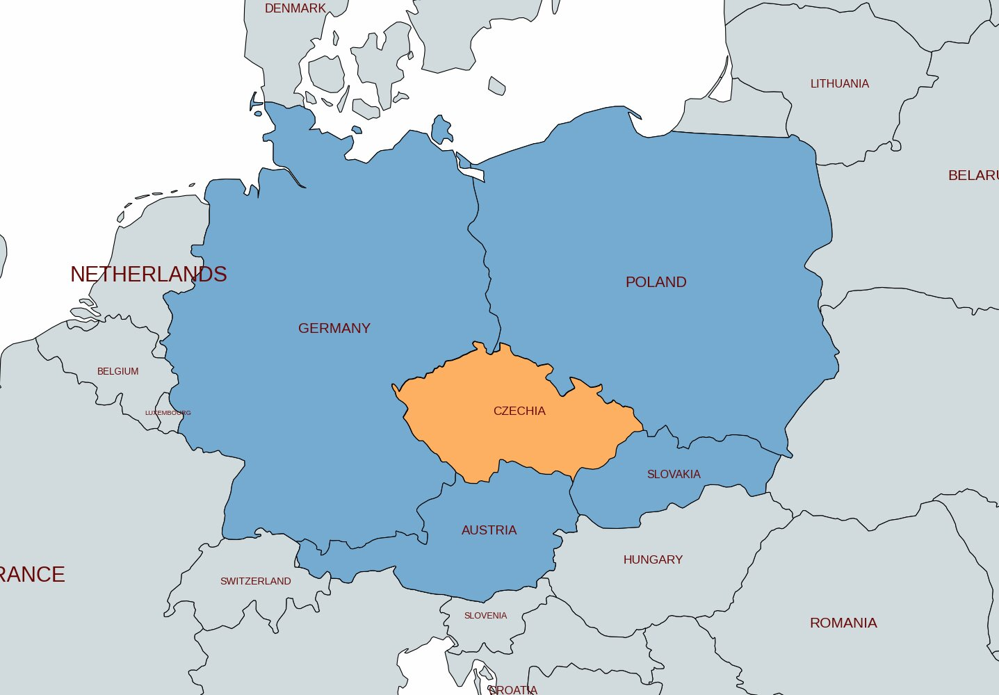
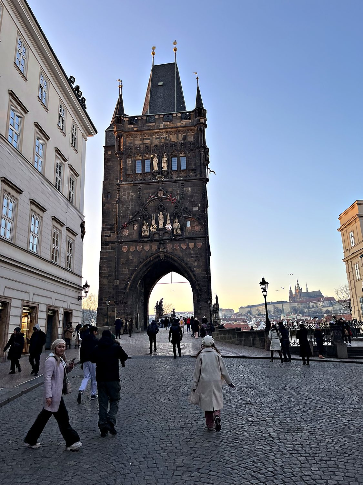
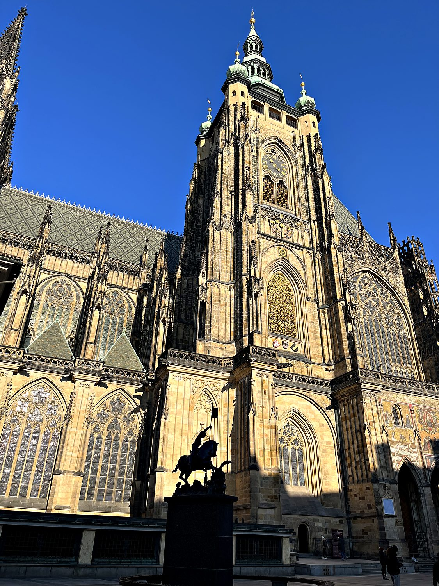
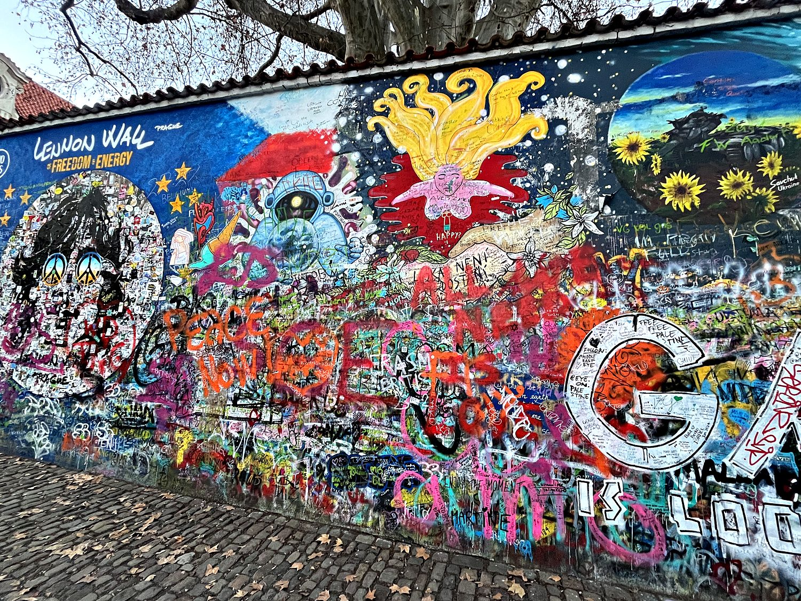

I spent a few days in Prague in January 2024, in the sort of cold that makes you question your life choices. It dropped to around -10 Celsius, the sky went pitch black by 5pm, and my traveling companions developed a running commentary on my apparently pitiful tolerance for the weather. None of this mattered, because Prague was gorgeous to walk around. Almost uniquely among the great cities of Central Europe, it emerged from World War II essentially unbombed, which means its thousand years of architecture still stand shoulder to shoulder in a largely intact medieval core. Add a dusting of snow, some frankly excellent cheap Chinese food, and a karaoke night that peaked with a legendary rendition of a raunchy American sitcom theme, and it was a near-perfect introduction to the Czech capital.
Prague grew up along a bend in the Vltava River, its two halves stitched together by a series of bridges and crowned by the largest ancient castle complex in the world. The heart of the city is the Old Town, a warren of cobbled lanes opening onto the magnificent Old Town Square, where the Gothic spires of the Týn Church loom over the medieval Astronomical Clock. From there you can wander through the grand Powder Tower, across the statue-lined Charles Bridge, and up the hill to the castle. You can also climb the Petřín lookout tower, which is a miniature Eiffel Tower built for a 19th-century exhibition, for a panoramic view over a sea of red rooftops. For all the sightseeing, Prague rewards simply getting lost in it: few cities pack so much history into such a walkable space.

The Czech lands were historically the kingdom of Bohemia, along with Moravia. They sit at the crossroads of Europe, and their history is intertwined with that of the Holy Roman Empire. Prague reached its first great golden age in the 14th century under Emperor Charles IV, who made it the imperial capital and endowed it with Charles University, the Charles Bridge, and the beginnings of St. Vitus Cathedral. The following century saw Bohemia become the cradle of the Protestant Reformation a full century before Martin Luther. When the reformer Jan Hus was burned at the stake in 1415, this sparked the Hussite Wars that convulsed the region. Prague also gave the world the distinctive political tradition of defenestration, or the throwing of officials out of windows, which the Czechs have repeatedly deployed in their history.
The Second Defenestration of Prague occurred in 1618, when the Bohemian nobility tossed two Catholic governors from a castle window (they both survived, reportedly by landing in a dung heap). The resulting revolt helped ignite the Thirty Years' War, and Bohemia fell under Habsburg rule for the next three centuries. Independence finally came in 1918 with the founding of Czechoslovakia, but it was short-lived: the country was carved up by Nazi Germany in 1938–39 and then, after the war, absorbed into the Soviet bloc. A hopeful reform movement known as the Prague Spring was crushed by Soviet tanks in 1968, and communist rule held until the peaceful Velvet Revolution of 1989 swept it away, led by the playwright-dissident Václav Havel. In 1993 Czechoslovakia amicably split into two nations in the so-called Velvet Divorce, giving rise to the modern-day Czech Republic and Slovakia.
The Charles Bridge is Prague's most beloved landmark, a grand stone bridge begun in 1357 under Charles IV to link the Old Town with the castle district across the Vltava. Guarding its eastern end is the soaring Gothic Old Town Bridge Tower, pictured here, widely considered one of the finest such towers in Europe; step through its archway and you emerge onto the bridge itself, lined with a famous parade of baroque statues of saints. Crossing it in the pale winter light, with Prague Castle glowing on the far hill, I could see why it has drawn pilgrims, merchants, and now camera-toting tourists for the better part of 7 centuries. For most of its life it was the only bridge across the river in Prague, the vital seam holding the two halves of the city together.

Looming over the city is Prague Castle, which the record books list as the largest ancient castle complex in the world. This sprawling citadel has been the seat of Bohemian kings, Holy Roman emperors, and today the Czech president for over a thousand years. At its heart rises St. Vitus Cathedral, a masterpiece of Gothic architecture whose construction, begun under Charles IV, dragged on for nearly six centuries before it was finally completed in 1929. Inside lie the tombs of Bohemian kings and the fabulously ornate silver monument to St. John of Nepomuk. It was also within these castle walls that the Second Defenestration of Prague took place in 1618, a reminder that this serene hilltop has been the stage for some of the most consequential and window-shattering moments in European history.

Tucked away in the Malá Strana district is a very different kind of monument: the Lennon Wall, an ordinary stretch of wall that has been covered in ever-changing layers of colorful graffiti since the 1980s. After John Lennon was murdered in 1980, young Czechs began painting his image and lyrics here as coded expressions of peace, freedom, and quiet defiance of the communist regime. This infuriated the secret police, who repeatedly painted over it, only for new messages to appear by morning. The wall became a small, stubborn symbol of the yearning that would eventually erupt in the Velvet Revolution. Today anyone is free to add to it, and it remains a vivid, constantly shifting collage of anarchic color amid Prague's Gothic and baroque grandeur.
